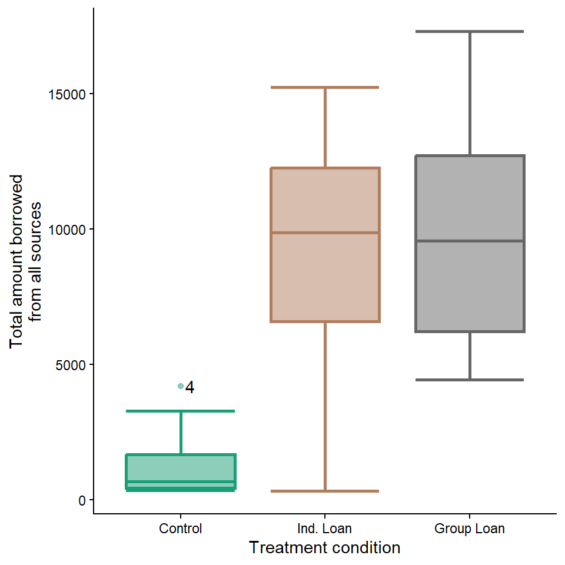
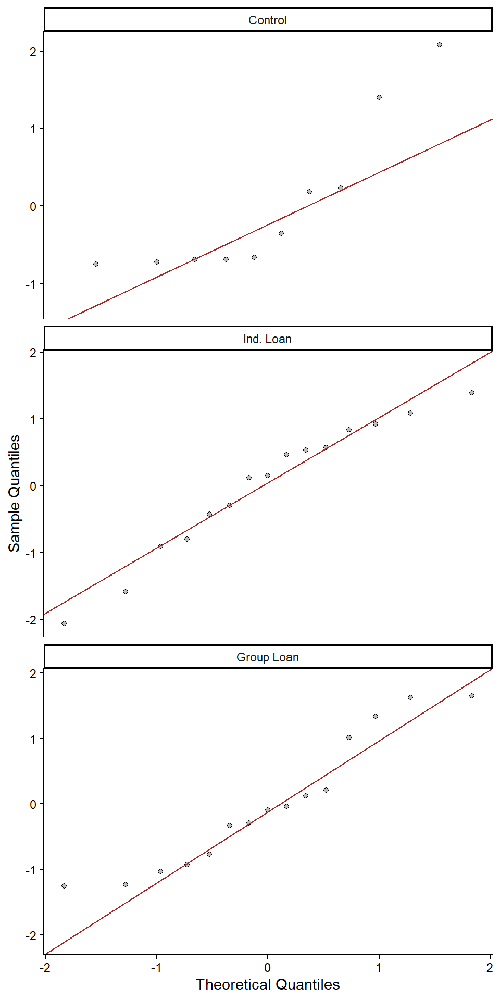
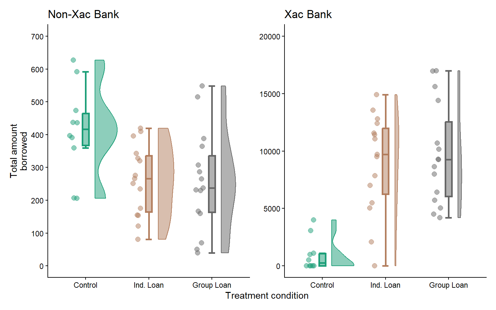

SRMP: answers for assignment 2
Part 1/2 (JASP)
- Examine
Grandtotal_amount_borrowedwith the Descriptives option. Choose the most appropriate measures for central tendency and dispersion, and report these in text. (2 points)- Mean = 7546.20; SD = 5223.18.
- Create boxplots for the
Grandtotal_amount_borrowedvariable, separated by treatment condition, and paste these into your assignment document. Report the casenumber and the soum number of any outlier(s). (2 points)- There is one outlier in the control condition; casenumber = 4; soum number = 29.
- For the
Grandtotal_amount_borrowedvariable, in each of the treatment conditions, report whether normality is violated using both visual plots and normality tests. (2 points)- Normality seems to be violated in the control condition based on the Shapiro-Wilk test (p = 0.007) and Q-Q plot. The SW tests were non-significant for for the individual (p = 0.508) and group loan (p = 0.142) groups, but the patterns in the QQ plots coupled with the low sample size mean that normality may also be dubious for these treatment conditions.

- Give your impressions on whether the assumption of homogeneity of variances seems reasonable between the three treatment conditions on the
Grandtotal_amount_borrowedvariable and describe how you reached your conclusions. (2 points)- Considering the boxplots and the differences in variances (and standard deviations) across the treatment groups, it does not seem like there is a consistent spread. In particular, the control group seems to have a narrower distribution than the other two groups. Levene’s test also suggests a significant difference between the group variances.
- Visualise the
total_amount_borrowed_XacBankand the amount borrowed from other sources (total_amount_borrowed_nonXacBank), per treatment group and paste your graph into your submission. Discuss the pattern of results based only on what you see in your graphs (i.e., don’t run any inferential tests). (2 points)- Concerning borrowing from non-Xac Bank sources, there seems to be very little effect of treatment. For Xac Bank, while villages in the individual and group loan conditions did not differ greatly in their borrowing, both borrowed considerably more than villages in the control condition. Lastly, more appears to have been borrowed overall from Xac Bank than from other sources.

Part 2/2 (conceptual)
Dr de Lange is studying the effect of candidate height in elections. She formulates the hypothesis that tall candidates are more likely to be elected than candidates with relatively low height. She performs a laboratory experiment with two conditions. Participants are randomly assigned to either the low height condition, which presents a fictional candidate who is of relatively low height, or the tall height condition, which presents a fictional candidate who is relatively tall. After being presented with the candidate, subjects are asked how likely it is that they would vote for the candidate in a general election.
- What are the null and the alternative hypotheses Dr. de Lange’s study? (1 point)
- \(\ H_0\): There is no difference in likelihood of election between taller and shorter candidates.
- \(\ H_1\): Taller candidates are more likely to be elected than shorter candidates.
- \(\ H_0\): There is no difference in likelihood of election between taller and shorter candidates.
- What is the level of measurement of the IV in Dr de Lange’s study? (1 point)
- Ordinal. The difference in height between the fictional candidates is not specified, but ‘relatively tall’ reflects greater height than ‘relatively short’.
- Dr. de Lange finds that voting intention is higher for taller candidates than for shorter candidates (p = .034).
- How should you interpret the p-value that Dr. de Lange has reported (assuming α = .05)? (1 point)
- The finding is statistically significant. This means that the difference is unlikely to be observed under the null hypothesis.
- State what it says about the null and about the alternative hypothesis. (1 point)
- The null hypothesis may be rejected as there is a fairly small chance of observing data at least as extreme as these under it.
- How should you interpret the p-value that Dr. de Lange has reported (assuming α = .05)? (1 point)
- Assume that Dr. de Lange planned to have 80% power in her study.
- Explain what this means. (1 point)
- This means that Dr. de Lange planned to collect a sample large enough to allow her a 80/100 (4/5) chance to detect a true difference in election success between taller and shorter candidates.
- Would the power of her study have been different if she had chosen α = .01? Explain why (not). (1 point)
- She would have had lower power at a lower (more stringent) alpha level (.5) because type I and type II error have a reciprocal relationship; decreasing one increases the other (.5).
- Explain what this means. (1 point)
References
Attanasio, O., Augsburg, B., De Haas, R., Fitzsimons, E., & Harmgart, H. (2015). The impacts of microfinance: Evidence from joint-liability lending in mongolia. American Economic Journal: Applied Economics, 7(1), 90–122. https://doi.org/10.1257/app.20130489